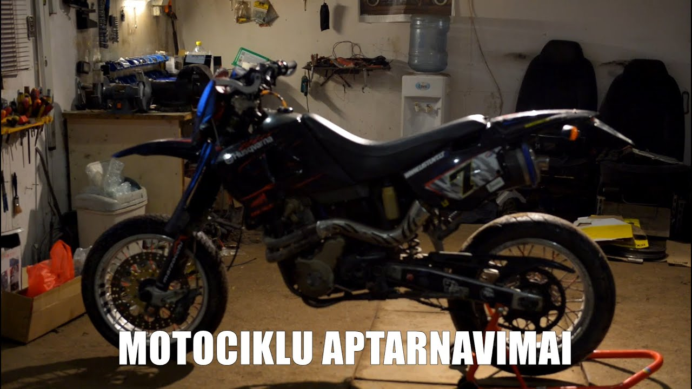
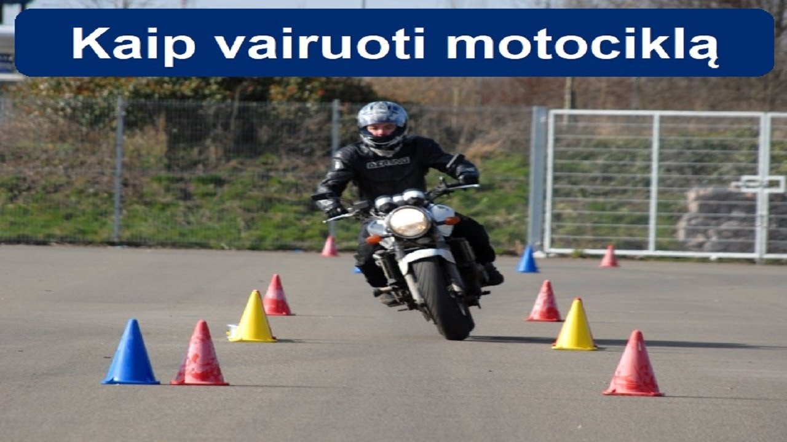

Motociklai moto - Skelbiu.lt

X Dėl geresnės Skelbiu.lt paslaugų kokybės naudojame slapukus (angl. cookies).
Naršydami toliau, patvirtinate, kad sutinkate su slapukais. Tai bet kada galėsite atšaukti, pakeisdami nustatymus. Skelbiu.lt slapukų politika . Lankomiausias
skelbimų portalas LT RU ( 0 ) Įsiminti skelbimai ( 0 ) Peržiūrėti skelbimai Paieškos ( 0 ) Prisijungti Registruotis Motociklai, Moto (2433) Gauti naujus skelbimus: Ekrane El. paštu + Įdėti skelbimą Įsiminti skelbimai (0) Skelbimų: 2433 Atnaujinti viršuje Naujausi viršuje Atnaujinti viršuje Pigiausi viršuje Brangiausi viršuje
NEPRALEISKITE NAUJŲ SKELBIMŲ
Motociklai, Moto
Gaukite naujus skelbimus į ekraną Gaukite naujusskelbimus el. paštu Panevėžys, ... prieš 3 d. 1
Nupirkciau Sovietini Motocikla, Dalis, Dokumentus
Nupirkciau sovietini motocikla (izh jawa ural, k750, emka, dnepr minsk ir t.t), gali but nevaziuojantys, blogos bukles, tai pat nupirkciau dalis, variklius,lopseliu, tech pasus, knygas. PASIEMU VISOJE LIETUVOJE. Siulyti ivairius variantus... Būklė: naudota Ieško Šiauliai, ... prieš 1 d. 1Perku sovietmečio laiku motociklus.
Sveiki. Perku sovietmecio laiku motociklus kaip Ural, Dnepr, K750. Motociklai gali buti be dokumentu ir labai pavarge. Taipogi domina detales, sena literatura apie motociklus. Domina visoje Lietuvoje. Būklė: naudota Ieško Kaunas, ... spalio 12 d. 1Motoland 250cc
Pirktas naujas pries du mėnesius vazinetas ne daug supilti nauji tepalai galima derėtis.Yra vienas defektas (galiniai stabdziai) Būklė: naudota 1 159 € Kaunas prieš 1 val.Yamaha XT 600 e
Parduodu nes nelabai važinėju. Lietuvoje nuvažiuota 500 km. nuo 2020 06. Purvynuose nemurkdytas. Padangos praktiškai naujos, grandinė ir žvaigždės naujos, pakeistas tepalas, tepalo filtras. Kuriasi puikiai. Bakas nesurūdijęs, ir šiaip niekas... Būklė: naudota 2 400 € Vilnius prieš 1 val.Bmw K100rt (1985)
Puikios būklės klasikinis kelioninis motociklas išrankiam žinovui. Legendinis K100 vienija daugybę gerbeju klubuose visoje Europoje. Kasmet rengiami saskrydziai ir suvažiavimai Vokietijoje, Austrijoje, Prancūzijoje ir Italijoje. Lyg šiol "... Būklė: naudota 2 150 € Vilnius prieš 1 val.Egzotiškas Turist T200 1973 m.l.
Atlikta pilna restauracija (kėbulas, važiuoklė, variklis), antikorozinis apdorojimas ir šelmiškas tiuningas. Visa bazė originali. Vienetinis. Kuriasi ir važiuoja. Vedasi elektriniu starteriu ir kojine pamina. Darbinis tūris 200 kūb.cm.... Būklė: nauja 1 490 € Klaipėda prieš 1 val.Bmw F800gs
BMW F800GS 2009metų, Pravažiavęs tik 40,000Km Pilna Istorija 3buvę savininkai labai saugoję ir puoselėję motocikla. Aš vienintelis jį naudojau lengvu offroadu. Dar yra senos asfaltinės padangos. Daug idėta patobulinimų (tiuningo), kurio vertė... Būklė: naudota 6 000 € Vilnius prieš 2 val.Kawasaki z750 tinka A2
Pilnai vaziuojantis tvarkingas, iš technines pusės jokiu defektu. Tepalai filtrai pakeisti Sezono pradžioje tad galima eksplotuoti iškart nupirkus. Trukumai tik kosmetiniai smulkus pabrazimai. Kaina derinama prie motociklo. Būklė: naudota 2 350 € Jonavos r. prieš 2 val.Enduro-super-moto
Parduodu (HONDA crf 250 kopija) VELIMOTOR VL-250-GY-11 2012.09.21m. LT registracija , technikinė iki 2022.03. važiuoja labai smagiai , visa informacija telefonu skambinkit ir klauskit . Galimas atvežimas . Būklė: naudota 1 500 € Jonavos r. prieš 2 val.Enduro motociklas Derbi Terra
Parduodu tvarkinga motociklą DERBI TERRA 125cm. (su yamaha wr motoru) 2010.04.28 .m. LT registracija , techninė apžiūra iki 2022.10.02.sėdi ir važiuoji. Visa informacija telefonu . Galimas atvežimas į vieta . Būklė: naudota 1 500 € Reklama Kaunas, ... prieš 2 val.Atv cross bike 125cc
ATV CROSS BIKE nuo 580-730eur Is VOKIETIJOS, visiskai nauji motociklai, Nuo 12 metu vaikams, Techniniai duomenys: Variklis: 1 Cylindras, 4-taktai Aušinimas: oras Greitis: 80 km/h Galingumas: 8,5 KW / 8000 u/min Degimas: Elektrinis / C. D. I.... Būklė: nauja 680 € Skuodo r. prieš 3 val.Hyosung
Informacija telefonu. 861694627 Būklė: naudota 550 € Kita prieš 3 val.Perku rusiškus motociklus
Geriausiomis kainomis perku tarybinius ar senesniu laiku motociklus. Kaina prikaluso nuo motociklo būklės ir modelio. Taip pat domina jų dalys, lopšiai, technine literatura. Labiausiai domina JAWA, Ural, Minsk, Kavrovec, Muravej, Viatka, Tula,... Būklė: naudota Ieško Vilnius prieš 3 val.Honda Vt750 Shadow
2008 m. Honda VT750 Shadow, 750 cm/3 variklis, rida 5900, atvežtas iš USA. Užregistruotas Lietuvoje, tech. apžiūra iki 2021-07. Domina keitimas į automobilį. Būklė: naudota 3 650 € Utenos r. prieš 3 val.2001metu.zr-750
Su Ta iki 2022 Nauji tepalai. Naujas oro filtras. Rida 42k. 56kw. Būklė: naudota 1 350 € Anykščių r. prieš 4 val.Jawa 559
Jawa 559 Motociklas nesiveda ir nevažiuoja. Variklis nesisuka. Dokumentų nėra. Būklė: naudota 650 € Telšių r. prieš 4 val.Krosinis
Gero stovio Būklė: naudota 170 € Plungės r. prieš 5 val.Iz Planeta
Iz 58 registruotas kaip planeta 1960m.Lt dokumentai visi numeriai sutampa Būklė: naudota 500 € Rokiškio r., ... prieš 1 d.Suzuki burgman 2005 125 cc
SUZUKI BURGMAN 125 CC 2005 METAI patogus miesto ir kelioniu motociklas, , sedyne ideali, padangos duslintuvai labai geros bukles , trys rakteliai , atiduodu labai pigiai negaisinkit del derybu, galiu atvesti uz papildoma mokesti 860486441... Būklė: naudota 1 000 € Šilalės r. prieš 1 d.K-650 izh planeta3 emka
K -650 kaip ir neturi dokumentu Kurias, vaziuoja.( reik meiles prideti) Izh turi dokumentus. 8metai nekurtas) Perkant abu kaina butu 500e Perkant atskirai K-650 350e Izh - 250e Būklė: naudota Vilnius prieš 1 d.Honda Deauville 650
Iš Vokietijos prieš 4 m. atvežtas kelioninis HONDA Deauville: - LT važinėtas nedaug, tiktai - 5500 km, - 2019 m. uždėtos naujos padangos (nuvažiuota apie 300 km), naujas kuro surbliukas, sumontuotos naujos galinio rato stabdžio kaladėlės,... Būklė: naudota 1 850 € Vilnius prieš 1 d.Yamaha Xj6
Sveiki, parduodu Yamaha xj 600 motocikla, registruotas ant A2 kategorijos (dokumentuose 35kw), realiai 57kw, lengvas manevringas ir tikrai sportiskas motocikliukas, turi kosmetiniu defektu, bet siaip vaziuoja puikiai ir be jokiu problemu.... Būklė: naudota 2 700 € Panevėžys prieš 1 d.Ural
Originalus m-63 1971m nedažytas dokumentai tarybiniai ira sutartis prieš pastatant buvo užkurtas detales visos vietoja lopšys nekiauras Būklė: naudota 1 590 € Panevėžys prieš 1 d.Minsk
Minsk m1m 1957m vienas is pirmujų m1m modelių variklis sukasi stovis foto Būklė: naudota 850 € 1 2 3 4 5 6 Įsiminti skelbimai Įdėkite skelbimąPopuliarios paieškos:
125 vilnius
bmw
iz
jawa
izh
ural
yamaha
dalys
ducati
dniepr
motociklai
125
honda
ktm
minsk
Prisijunk ir rask savo įsimintus skelbimus visur – kompiuteryje, telefone, planšetėje ARBA Jungtis su Facebook Jungtis su Google Skelbiu.lt pagalba: +370 664 55727 Darbo laikas: I-V 08:20 - 17:00 Naudojimo taisyklės / D.U.K. Kontaktai Svetainės struktūra D I G I N E T